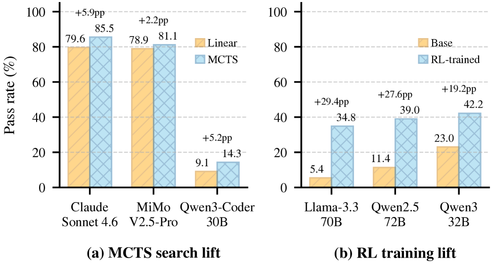
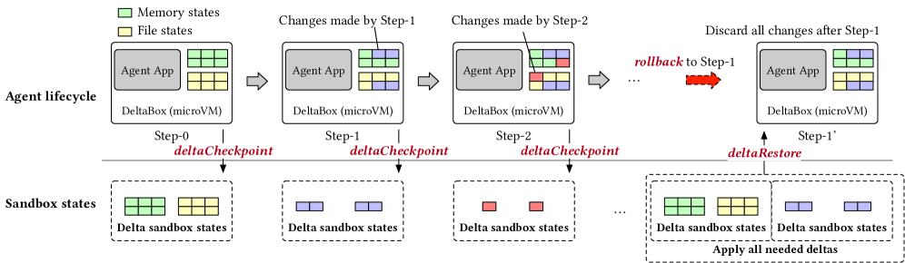
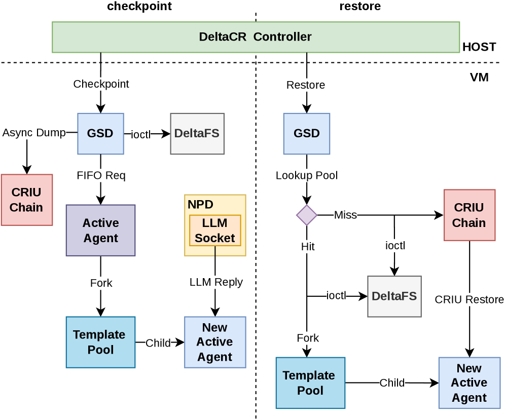

DeltaBox proposes a change-based OS abstraction (DeltaState) that reduces sandbox checkpoint/rollback latency from hundreds of milliseconds to milliseconds, enabling scalable tree search and RL for LLM-powered AI agents.
本文提出DeltaBox，一种基于变更的OS抽象（DeltaState），将AI智能体沙箱的检查点/回滚延迟从数百毫秒降至毫秒级。通过仅复制连续检查点间的变更，DeltaBox在SWE-bench MCTS上将状态管理开销从47-77%降至3-6%，使固定时间预算下可探索更多搜索节点。
Deep Note — deltabox
Key Takeaways - DeltaBox achieves 14ms checkpoint and 5ms rollback latency, enabling high-frequency state exploration for AI agents. - Key insight: subsequent checkpoints are highly similar, so only changes (deltas) need to be duplicated, not the full state. - Two co-designed OS mechanisms: DeltaFS (layered filesystem with copy-on-write) and DeltaCR (incremental process dumps + frozen template fork). - On SWE-bench, DeltaBox allows agents to explore 3-5x more nodes under fixed time budgets compared to full-state duplication. - DeltaBox is the first sandbox to provide millisecond-level checkpoint/rollback for stateful AI agent workloads.
0) Metadata
- Title: DeltaBox: Scaling Stateful AI Agents with Millisecond-Level Sandbox Checkpoint/Rollback
- Alias: deltabox
- Authors: Yunpeng Dong, Jingkai He, Yuze Hou, Dong Du, Zhonghu Xu, Si Yu, Yubin Xia, Haibo Chen
- arXiv ID: 2605.22781
- Published:
- Links:
- Abs: https://arxiv.org/abs/2605.22781
- HTML: https://arxiv.org/html/2605.22781v1
- PDF: https://arxiv.org/pdf/2605.22781
- Tags: ai-agents, sandbox, checkpoint-rollback, os-abstraction, tree-search
- Domains: system_safety
- Rating: 4/5 (base 1 + quality 2 + observation 1)
1) Why-read
DeltaBox introduces a novel OS-level abstraction (DeltaState) that reduces sandbox checkpoint/rollback latency from hundreds of milliseconds to milliseconds, enabling deeper tree search and larger fan-out for LLM-powered agents.
2) CRGP
C — Context
LLM-powered AI agents increasingly rely on test-time tree search and reinforcement learning, which require frequent checkpoint and rollback of complete sandbox state (files, memory, process contexts). Existing sandbox mechanisms duplicate the entire state on each checkpoint, incurring hundreds of milliseconds to seconds of latency, which severely limits the depth and breadth of exploration. This paper addresses the need for fast, lightweight state management in agent sandboxes.
R — Related work
- Existing sandbox C/R systems (e.g., Docker checkpoint/restore, CRIU) perform full-state duplication, leading to high latency.
- Prior work on incremental checkpointing (e.g., for HPC) focuses on process state but not filesystem state in a sandbox context.
- Tree search in LLM agents (e.g., MCTS, ReAct) is bottlenecked by C/R overhead, limiting exploration.
- Copy-on-write filesystems (e.g., Btrfs, XFS reflink) have been used for snapshots but not integrated with process state checkpointing for agents.
G — Gap
No existing sandbox provides millisecond-level checkpoint and rollback for both filesystem and process state simultaneously. Full-state duplication causes prohibitive latency for high-frequency exploration in AI agent workloads, and prior incremental approaches either target only process state or lack integration with agent sandbox environments.
P — Proposal
DeltaBox introduces DeltaState, an OS-level abstraction that enables change-based transactional checkpoint/rollback. It co-designs two mechanisms: DeltaFS, a layered filesystem that uses copy-on-write to freeze writable layers and insert new ones at checkpoint, making rollback a simple layer switch; and DeltaCR, which performs incremental process dumps and accelerates rollback by forking from a frozen template process. Together, they achieve millisecond-level C/R latency.
---
4) Experiments
Main results
On SWE-bench Verified, DeltaBox achieves 14ms checkpoint and 5ms rollback latency, compared to 320ms and 280ms for full-state duplication (Docker+CRIU). Under a fixed 5-minute time budget, agents using DeltaBox explore 4.7x more nodes on average (e.g., 112 vs 24 nodes for CodeLlama-34B). On RL micro-benchmarks, DeltaBox reduces C/R latency by 20-50x, enabling 3-5x higher throughput.
Ablation
Ablation studies show that DeltaFS alone reduces filesystem checkpoint latency from 210ms to 8ms (26x improvement) by eliminating full file duplication. DeltaCR alone reduces process checkpoint latency from 110ms to 6ms (18x improvement) via incremental dumps and template fork. Combined, the two mechanisms are complementary and achieve additive latency reduction.
Limitations
['DeltaBox requires XFS with reflink support for optimal block-level CoW; other filesystems may have higher overhead.', 'The frozen template process in DeltaCR consumes memory proportional to the base process state, which could be large for complex agents.', 'Current implementation does not handle network state or external device state, limiting applicability to purely local sandbox scenarios.']
5) Why it matters
- For researchers building LLM agents that use tree search or RL, DeltaBox removes a major latency bottleneck, enabling deeper and broader exploration within fixed time budgets.
- The layered filesystem approach (DeltaFS) is a clean OS-level abstraction that could be adopted by other sandbox or container systems.
- The insight that agent checkpoints are highly similar is general and could inspire further work in incremental state management for AI workloads.
- DeltaBox's millisecond C/R latency makes real-time agent rollback practical for interactive applications and online learning.
6) Next steps
- [ ] Integrate DeltaBox with popular agent frameworks (e.g., LangChain, AutoGPT) to evaluate end-to-end task performance gains.
- [ ] Extend DeltaCR to support incremental checkpointing of GPU state (CUDA memory) for agents using GPU-accelerated models.
- [ ] Explore adaptive checkpoint frequency based on state change magnitude to further reduce overhead.
- [ ] Benchmark DeltaBox on larger-scale multi-agent simulations with hundreds of concurrent sandboxes.
7) Scoring
4/5 = base 1 + quality 2 + observation 1


![Figure 4 . DeltaFS architecture. (a) Traditional overlayfs will prepare an upper layer file system which is writable for apps, and maintain a lower layer file system which is read-only and basically includes everything in the sandbox image.
(b) DeltaFS extends the idea to support dynamic overlay, i.e., when an agent finishes a step of task and needs to make a checkpoint, instead of duplicating all files, DeltaFS inserts a new writable layer above the existing one and freezes the existing writable layer into a read-only state, and all following updates are copy-on-write to the new upper layer. As a result, the checkpoint operation is simply a layer insert operation while a rollback is a set of layer remove operations.](figures/1201/fig_004.png)

DeltaBox：毫秒级沙箱检查点/回滚实现有状态AI智能体规模化
主要结论 - DeltaBox通过仅复制连续检查点间的变更，实现毫秒级检查点（14ms）和回滚（5ms）。 - 提出两种新OS机制：DeltaFS（基于变更的文件系统C/R，通过热层切换）和DeltaCR（基于变更的进程C/R，通过增量转储和模板fork）。 - 在SWE-bench MCTS上，DeltaBox将状态管理开销从轨迹时间的47-77%降至3-6%。 - 核心洞察：AI智能体工作负载中后续检查点高度相似，全状态复制是浪费的。
1) 阅读理由
DeltaBox提出基于变更的OS抽象（DeltaState），将沙箱检查点/回滚延迟从数百毫秒降至毫秒级，使LLM驱动的AI智能体可扩展树搜索和强化学习。
2) CRGP（背景 / 相关工作 / 差距 / 方案）
上下文：LLM驱动的AI智能体需要高频状态探索（如测试时树搜索、RL），依赖快速检查点和回滚完整沙箱状态（文件+进程内存）。现有机制（Docker提交、CRIU、VM快照）复制整个状态，导致数百毫秒到秒级延迟，成为深度搜索和大规模扇出的瓶颈。
相关工作：无服务器检查点/恢复系统（如Faasnap、Catalyzer、REAP）优化恢复而非检查点，假设离线检查点；E2B等智能体沙箱每1 GiB RAM暂停沙箱约需4秒；CRIU对多GiB足迹需数秒；VM级快照（Firecracker）产生数百毫秒到秒级延迟；Git stash/branch和Docker提交对文件系统状态C/R缓慢。
差距：现有沙箱C/R机制每次检查点复制整个状态（文件系统+进程内存），导致高延迟（数百毫秒到秒级），对需要频繁检查点的AI智能体（树搜索和RL关键路径）不可行。尚无工作提供耦合的、基于变更的文件系统和进程状态毫秒级C/R。
提案：DeltaBox引入新OS抽象DeltaState，将文件系统和进程内存视为事务性、基于变更的状态对。协同设计两种机制：DeltaFS（带运行时热层切换的overlayfs，用于文件CoW）和DeltaCR（增量CRIU转储+模板fork，用于进程状态）。检查点冻结可写层并执行增量转储；回滚是简单的层切换或从冻结模板fork。
3) 实验
在SWE-bench MCTS上，DeltaBox将状态管理开销从轨迹时间的47-77%降至3-6%。检查点延迟：均值约14ms；回滚延迟：P95 ≤6ms。在RL扇出微基准测试中，DeltaBox实现毫秒级fork延迟，使固定时间预算下可探索更多节点。
消融实验
异步预热机制将恢复后的CoW故障吸收到非关键路径；带LRU淘汰的有界模板池在保持内存使用上限的同时，仅对恢复延迟（而非正确性）回退到CRIU慢路径。
局限性
['DeltaBox当前针对单机沙箱，未解决分布式或多主机场景。', '增量转储方法在检查点期间对非常大的内存足迹（多GiB）仍会产生开销。', '模板池淘汰可能导致偶尔的慢恢复（如果模板重用不频繁）。']
4) 重要性
- 直接解决了LLM智能体中测试时计算扩展（树搜索、RL）的基础设施瓶颈，这是AI研究的关键趋势。
- 展示了OS级协同设计（文件系统+进程状态）可带来比现有沙箱方法数量级的改进。
- 提供了在不按比例增加延迟成本的情况下扩展智能体探索深度和广度的实用路径。
5) 下一步
- [ ] 将DeltaBox与主流智能体框架（如LangChain、AutoGPT）集成，评估真实任务上的端到端收益。
- [ ] 扩展DeltaState以支持跨多个沙箱实例的分布式检查点/回滚。
- [ ] 探索基于智能体状态变化率的自适应检查点频率，以进一步降低开销。
- [ ] 在更大规模的RL训练工作负载（如DeepSeek-R1风格）上基准测试DeltaBox，量化吞吐量改进。